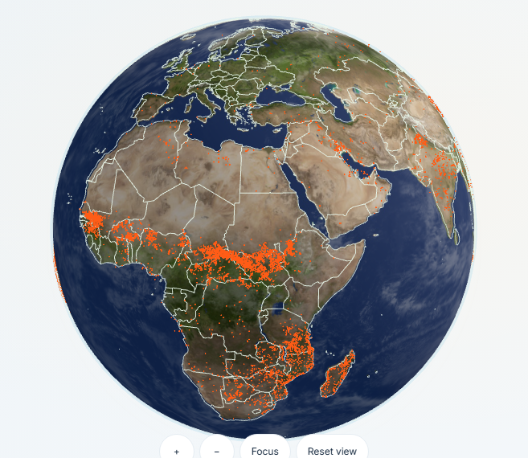
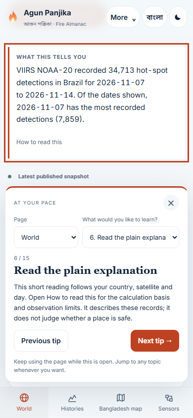

NASA SPACE APPS 2026
We're Team
KUETaguns.
Sohaib Hasan Niloy · Ayesha Mehereen
Sarwad Hasan Siddiqui · Adiba Tahsin
Abdullah Al Saif · Md. Rafsani Shazid

WHY WE BUILT THIS
Satellites change.
Fire records change, too.
MODIS · about 1 km
VIIRS · 375 m
Connect the records.
Understand the season.
MEET OUR PROJECT
Agun Panjika
Know your country's
fire story.
NASA fire observations,
made easier to explore.
EXPLORE WHERE YOU LIVE
Spin Earth. Choose your country.
Explore NASA’s free MODIS and VIIRS observations.
Choose a satellite.
Follow the days.

UNDERSTAND THE HISTORY
Compare seasons. Read a plain explanation.

A FIRE STORY PEOPLE CAN USE
Keep your country close.
Save a place on your phone.
Learn at your own pace.
Share what you find.
Helping students and communities
understand seasonal fire activity.
Sohaib Hasan Niloy · Ayesha Mehereen · Sarwad Hasan Siddiqui
Adiba Tahsin · Abdullah Al Saif · Md. Rafsani Shazid
polymathicx.github.io/Agun-Panjika
